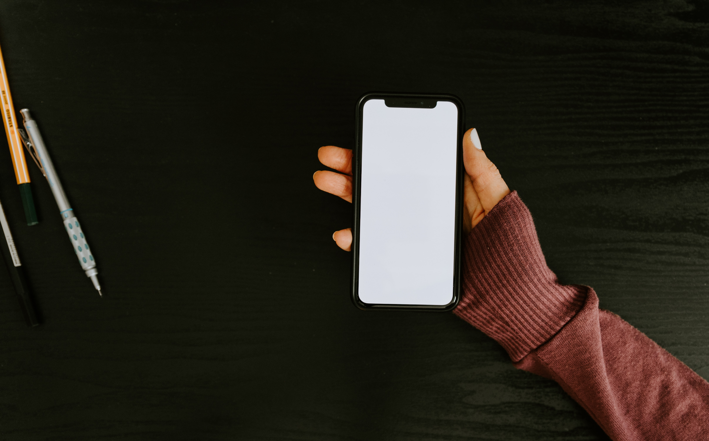

Mahasiswa, Ini 7 Cara Belajar Lebih Produktif
ditulis oleh Chalida Rahma. pada 23 Oktober 2023
Pandemi Covid-19 yang berkepanjangan ini membuat siswa atau mahasiswa lebih banyak belajar dari rumah. Jika dulu belajar di sekolah terkadang materi masih belum dipahami, apalagi kini belajar dari rumah. Maka butuh tenaga ekstra agar materi bisa diserap. Tetapi, bagaimana caranya agar belajar di rumah bisa lebih efektif? Maka, butuh tips belajar yang produktif. Bagi para mahasiswa, berikut ini 7 cara belajar produktif dilansir dari akun Instagram Ditjen Pendidikan Vokasi Kemendikbud Ristek.
1. Coba bangun lebih pagi
Siswa atau mahasiswa yang juga masih ikut pembelajaran daring, cobalah bangun lebih pagi untuk mempersiapkan diri dan memulai hari lebih semangat dan efektif.
2. Coba tulis target belajar
Cara selanjutnya ialah menulis rencana target belajarmu. Bisa harian, mingguan, atau bulanan. Jadi, kalian tahu apa yang harus dicapai dalam jangka waktu tertentu.

3. Cari waktu yang tepat
Cobalah untuk mencari waktu belajar yang paling sesuai dengan kalian. Usahakan di waktu tersebut, kalian maksimal dan konsisten dalam belajar.
4. Jangan bermain gawai dulu
Jauhkan benda atau hal yang bisa mengalihkan perhatian belajar kalian. Contohnya tidak bermain gawai pada saat belajar. Hal ini penting, karena gawai menjadi godaan bagi siapa saja. Apalagi jika ada notifikasi masuk tentu akan membuat orang untuk segera melihat/mengeceknya.

5. Jangan tunda target
Jangan biasakan menunda target, kerjakan semua yang sudah ditentukan. Karena jika malas, nanti justru akan tertinggal dan tidak dikerjakan.
6. Coba periksa hasil belajar
Kamu juga harus selalu periksa hasil belajarmu. Apakah sudah mencapai target atau belum. Tetapi, usahakan mencapai target
7. Berlatih soal
Cobalah untuk sering berlatih mengerjakan soal. Semakin sering latihan soal, maka semakin bisa menguasai materi dan kamu akan terbiasa.
Sumber: Kompas.com